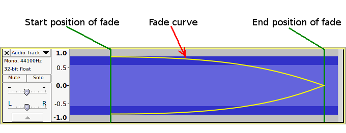
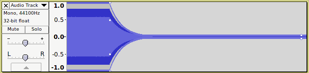
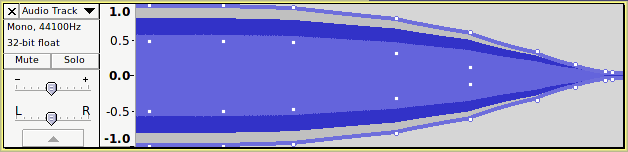

Creating Fades with the Envelope Tool
From Audacity Manual
The principal advantage of creating fades with the Envelope Tool is that it is non-destructive. The envelope may be changed or removed at any time with no loss to the audio data.
Because the Envelope Tool uses exponential fades, creating a precise fade shape can be very fiddly, but with patience almost any type of fade shape can be achieved.
- The fade shape does not need to look exactly smooth to provide an effective fade. Check what the fade sounds like before spending an unnecessary amount of time trying to make the fade look right. The sound is far more important than what it looks like.
- To make small adjustments to the envelope it can be useful to expand the track vertically.
When related to fades, the terms exponential and logarithmic are frequently interchanged, which can be confusing, but it is really just a matter of perspective. Exponential growth is said to occur when something increases at an ever greater rate, whereas exponential decay is said to occur when something decreases at an ever decreasing rate. Logarithmic is the inverse of exponential, so if something is growing exponentially over time, then the time taken for a given amount of growth is shortened logarithmically. Within this article the term exponential is used in the sense of "exponential decay", where the level gets closer and closer to a target level without ever reaching it.
For an exponential fade out, this means that the audio level will get quieter and quieter but will never be totally silent. In practice, it is usual that an exponential fade out will only actually follow the logarithmic/exponential scale until it is very close to silence and will then be made to go silent by either dropping directly from the very low level to silence, or via a short linear fade to silence.
Tips for drawing fades with the Envelope Tool:
In this example we will create a fade that starts at full volume, then starts to fade slowly, then gradually more rapidly to silence, as illustrated here:
- 
- Begin the fade by setting a control point at the time position where the fade starts at full volume:
- Click on the waveform with the envelope tool at the "start position" of the fade.
- Drag the control point vertically to the nearest edge of the track to achieve full volume.
- Note that if you drag the point beyond the edge of the track, the control point will be removed.
- Set a control point where the fade becomes silent.
- Click on the waveform with the envelope tool at the "end position" of the fade.
- Drag the control point up or down toward the vertical centre of the track.
- Note that the fade will be almost silent for a large section of the fade.
- 
- Click where you want to add additional control points as necessary to push out the envelope to the required shape.
- 